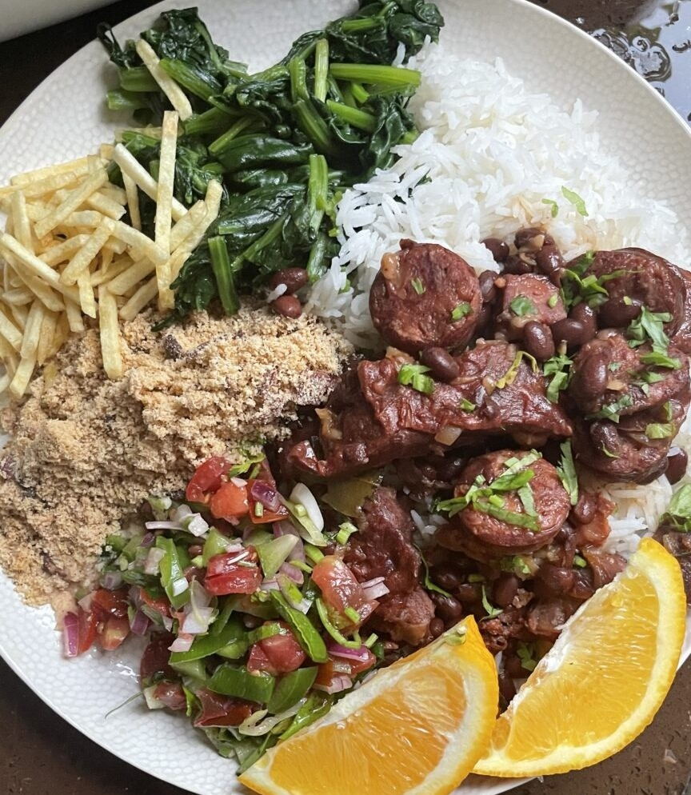

01 / 05

Brazil
SIGNATURE FOOD · BRAZIL
Feijoada
A slow-cooked black-bean stew served with rice and sides.
THE STORY
Feijoada has a complex history shaped by Brazilian and Portuguese food traditions.
WHY IT'S LOVED
It is a recognizable social meal served in homes and restaurants.